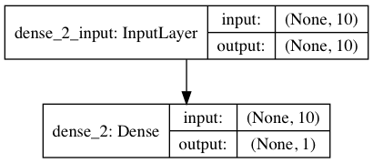
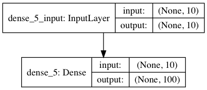
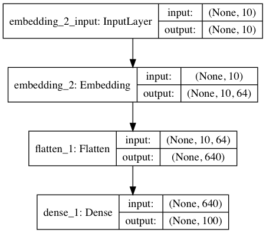
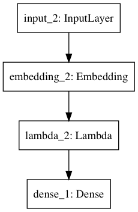
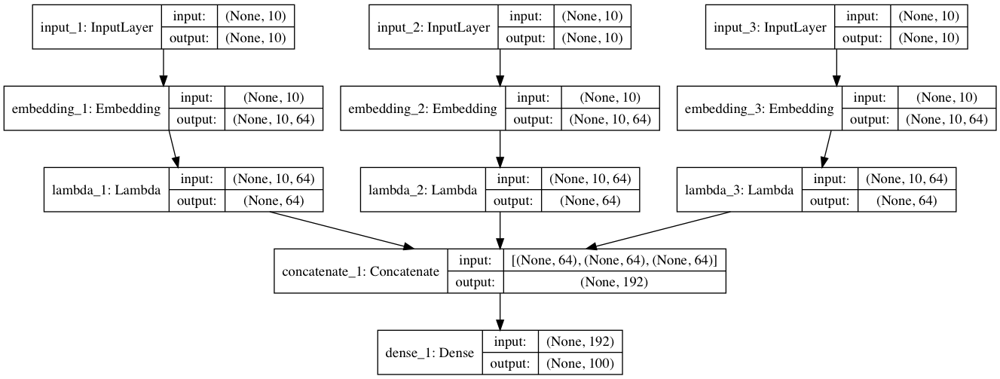

I started to use Keras for Deep Learning months ago, and as I was using it, I thought I should make a memo of all the cool features and network architectures I was using. This post aims at sharing some snippets I have found useful, so I can reuse them later. Maybe it will be useful to you as well !
Networks example
Let's start with some networks example. Those are really similar to the examples you'd find in the Keras Docs, but I added a few things here and there to better understand what they do.
Regression
from keras.models import Sequential
from keras.layers import Dense
from keras.utils import plot_model
from keras.utils.vis_utils import model_to_dot
import numpy as np
from IPython.display import SVG
X = np.random.rand(200, 10)
y = np.random.rand(200, 1)
model = Sequential()
model.add(Dense(1, activation='relu', input_shape=(10,)))
model.compile('sgd', 'mse')
# SVG(model_to_dot(model, show_shapes=True).create(prog='dot', format='svg'))
plot_model(model, to_file='regression.png', show_shapes=True)
model.fit(X, y, epochs=5)
model.predict(np.random.rand(1, 10))

Binary Classification
from keras.models import Sequential
from keras.layers import Dense
from keras.utils import plot_model
from keras.utils.vis_utils import model_to_dot
import numpy as np
from IPython.display import SVG
X = np.random.rand(200, 10)
y = np.random.randint(0, 2, 200)
model = Sequential()
model.add(Dense(1, activation='relu', input_shape=(10,)))
model.compile('sgd', 'binary_crossentropy')
# SVG(model_to_dot(model, show_shapes=True).create(prog='dot', format='svg'))
plot_model(model, to_file='binary_classifier.png', show_shapes=True)
model.fit(X, y, epochs=5)
model.predict(np.random.rand(1, 10))

Multiclass Classification
from keras.models import Sequential
from keras.layers import Dense
from keras.utils import plot_model, to_cateorical
from keras.utils.vis_utils import model_to_dot
import numpy as np
from IPython.display import SVG
X = np.random.rand(200, 10)
y = np.random.randint(0, 100, 200)
y = to_categorical(y) # no need for this line if you
# use 'sparse_categorical_crossentropy' loss
# during compile
model = Sequential()
model.add(Dense(100, activation='softmax', input_shape=(10,)))
model.compile('sgd', 'categorical_crossentropy')
# SVG(model_to_dot(model, show_shapes=True).create(prog='dot', format='svg'))
plot_model(model, to_file='multiclass_classifier.png', show_shapes=True)
model.fit(X, y, epochs=5)
model.predict(np.random.rand(1, 10))

Embeddings
from keras.models import Sequential
from keras.layers import Dense, Embedding, Flatten
from keras.utils import plot_model, to_categorical
from keras.utils.vis_utils import model_to_dot
import numpy as np
from IPython.display import SVG
X = np.random.randint(1000, size=(200, 10))
y = np.random.randint(0, 100, 200)
y = to_categorical(y) # no need for this line if you
# use 'sparse_categorical_crossentropy' loss
# during compile
model = Sequential()
model.add(Embedding(input_dim=1000,
output_dim=64,
input_length=10))
model.add(Flatten()) # will stack each word embedding
model.add(Dense(100, activation='softmax'))
model.compile('sgd', 'categorical_crossentropy')
# SVG(model_to_dot(model, show_shapes=True).create(prog='dot', format='svg'))
plot_model(model, to_file='embeddings_classifier.png', show_shapes=True)
model.fit(X, y, epochs=5)
model.predict(np.random.rand(1, 10))

Embeddings with the functional API
from keras.models import Model
from keras.layers import Dense, Embedding, Lambda, Input
from keras.backend import mean
from keras.utils import plot_model
from keras.utils.vis_utils import model_to_dot
import numpy as np
from IPython.display import SVG
X = np.random.randint(1000, size=(200, 10))
y = np.random.randint(0, 100, 200)
x = Input(shape=(10,), dtype='int32')
h = Embedding(output_dim=64, input_dim=1000)(x)
h = Lambda(lambda r: mean(r, axis=1))(h)
o = Dense(100, activation='softmax')(h)
model = Model(inputs=[x], outputs=[o])
model.compile('sgd', 'sparse_categorical_crossentropy')
# SVG(model_to_dot(model, show_shapes=True).create(prog='dot', format='svg'))
plot_model(model, to_file='embeddings_classifier_functional.png', show_shapes=True)
model.fit(X, y, epochs=5)
model.predict(np.random.rand(1, 10))

Handling multiple inputs
from keras.models import Model
from keras.layers import Dense, Embedding, Lambda, Input, concatenate
from keras.utils import plot_model
from keras.utils.vis_utils import model_to_dot
import numpy as np
from IPython.display import SVG
X1 = np.random.randint(1000, size=(200, 10))
X2 = np.random.randint(1000, size=(200, 10))
X3 = np.random.randint(1000, size=(200, 10))
y = np.random.randint(0, 100, 200)
x1 = Input(shape=(10,), dtype='int32')
x2 = Input(shape=(10,), dtype='int32')
x3 = Input(shape=(10,), dtype='int32')
h1 = Embedding(output_dim=64, input_dim=1000)(x1)
h1 = Lambda(lambda r: mean(r, axis=1))(h1)
h2 = Embedding(output_dim=64, input_dim=1000)(x2)
h2 = Lambda(lambda r: mean(r, axis=1))(h2)
h3 = Embedding(output_dim=64, input_dim=1000)(x3)
h3 = Lambda(lambda r: mean(r, axis=1))(h3)
h = concatenate([h1, h2, h3])
o = Dense(100, activation='softmax')(h)
model = Model(inputs=[x1, x2, x3], outputs=[o])
model.compile('sgd', 'sparse_categorical_crossentropy')
# SVG(model_to_dot(model, show_shapes=True).create(prog='dot', format='svg'))
plot_model(model, to_file='multi_embeddings_classifier_functional.png', show_shapes=True)
model.fit([X1, X2, X3], y, epochs=5)
model.predict([np.random.rand(1, 10),
np.random.rand(1, 10),
np.random.rand(1, 10)])

Callbacks
Keras has many awesome callbacks that can be used during training. You can find them in the docs and I won't cover them all here. The one I recently discovered and particularly liked is Tensorboard. I am not very familiar with Tensorflow yet, but I love the fact that Tensorboard works with Keras. You can visualize how your model trains, your embeddings, and much more.
from keras.models import Sequential
from keras.layers import Dense
from keras.utils import plot_model
from keras.utils.vis_utils import model_to_dot
from keras.callbacks import TensorBoard
import numpy as np
from IPython.display import SVG
X = np.random.rand(200, 10)
y = np.random.rand(200, 1)
model = Sequential()
model.add(Dense(1, activation='relu', input_shape=(10,)))
model.compile('sgd', 'mse')
tensorboard = TensorBoard(log_dir='./logs/run1')
model.fit(X,
y,
epochs=5,
callbacks=[tensorboard])
model.predict(np.random.rand(1, 10))
# history.history
# start tensorboard with tensorboard --logdir=run1:./logs/run1